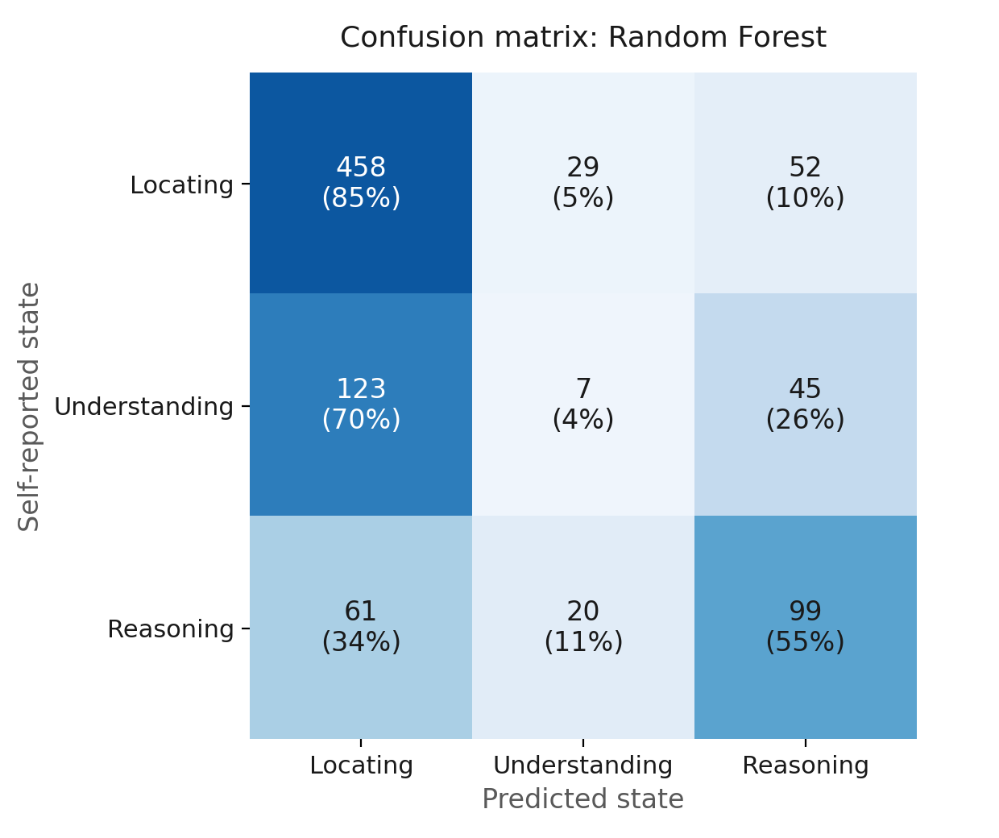
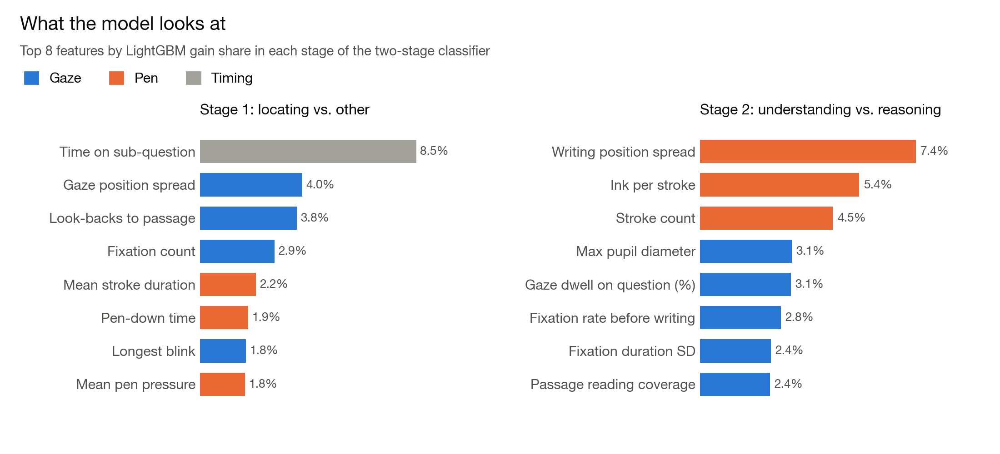

Models were evaluated with leave-one-participant-out cross-validation, so every prediction is for a person the model never saw during training. Scores are averaged over 5 random seeds.
| Setup | Model | Accuracy | Balanced acc. | Macro-F1 | Cohen's κ |
|---|---|---|---|---|---|
| Rule-based baseline | – | 0.721 | – | 0.505 | 0.42 |
| Flat, 49 features | XGBoost | 0.631 | 0.513 | 0.509 | 0.314 |
| Two-stage, 94 features | LightGBM | 0.629 | 0.519 | 0.510 | 0.316 |
| Two-stage, gaze only | XGBoost | 0.604 | 0.497 | 0.487 | 0.282 |
| Two-stage, pen only | XGBoost | 0.607 | 0.506 | 0.503 | 0.283 |
The baseline predicts the most common state for each question position, which is a strong cue on its own. The models match it overall but are much better at detecting understanding (F1 0.20 vs. 0.00), the state where a student is struggling with meaning.

